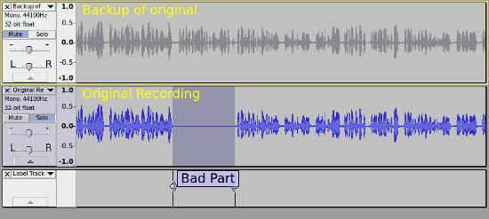
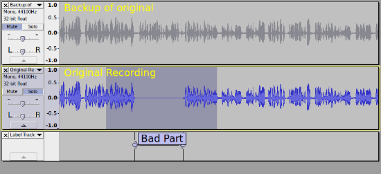
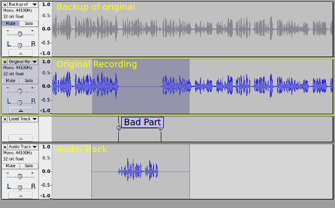

Tutorial - Punch-in repair of recordings
The images on this page have RMS display turned on, the light color in the center of the waveform.
|
| Good Practice Tip: Always make a safety backup copy of a recording by exporting it as WAV or FLAC, immediately after you stop the recording, before you work on the punch-in. |
To "punch-in" a correction to a recorded track, we use a new track for each take. This allows us to hear a "lead in" and "lead out" (pre-roll / post roll) and, if necessary, to make multiple attempts at correcting, from which we can select and use the one that we like best.
Step 1: Backup the track
The first thing to do is to make a backup copy of the track, so that if you mess up, you have something to go back to.
In this illustration the track has been duplicated, using the Ctrl + D shortcut, and muted using the button. The backup copy is muted so that it will not play.
You may find it useful to collapse this track to save screen space by clicking the Track Collapse button  .
.
In the example the part to be changed is marked with a label, which is not really necessary, but is for illustration purposes.
- 
The "bad part" has been silenced. The easiest way to do this is to select the bad part, then use the Ctrl + L shortcut.
Step 2: Overdub
Ensure that you have Audacity set for overdubbing (Hear other tracks during recording) in the Recording Preferences (this is the default setting).
Also ensure there that "Enable audible input monitoring" is turned off (default setting).
| As you will be using overdubbing, ensure that you have made the necessary Latency Latency compensation setting |
Step 3: Lead-in Lead-out
Next you need to extend the selection a bit so that there is some lead-in/lead-out (pre-roll/post-roll):
- 
Step 4: Make the punch-in
And now you are ready to record the "drop in" (punch-in).
| Tip: For working with multi-track projects, it can be useful to set the button behavior to "Multi-track" in Tracks Behaviors Preferences |
You will need to record on a new track, so just hold down the button and the Record button will change to the alternate  Record New Track button.
Record New Track button.
Now click that Record New Track button (or use the Shift + R shortcut) and Audacity will start recording on a new track, and will stop automatically when it reaches the end of the selection.
- 
Step 5: Audition your punch-in repair
Now is the time to listen to the punch-in repair you have made.
Select around your punch-in repair (leaving the backup track muted) and press the  play button.
play button.
If you are happy with the repair you can delete the backup track from the project.
Optional extras
- You do not have to mix down the tracks as they will be mixed down automatically on export (muted tracks are not included in the mix), but if you want to mix the tracks, select the tracks that you want to mix down and use .
- If you want to practice the drop-in before recording it, just use the
 play button space rather than the record button.
play button space rather than the record button.
- After the recording stops, press Space to listen back to it. If you are not happy, us shortcut Ctrl+Z to undo.
- If your timing is slightly off, you can use the move the clip using the Clip-handle drag-bars, to adjust the position of the new clip.
- The dropped in recording has some lead-in/lead out silence, which may contain noise. That can be trimmed, faded, or fully silenced if required.
- For some types of recording, crossfading between the original recording and the punch track can help to create seamless edits.